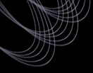

Return to SDSS homepage

UNDER CONSTRUCTION
Website Forming Region
THIS PAGE IS CURRENTLY UNDER CONSTRUCTION
We hope to have it completed soon...
Starforming region in the Carina Nebula: NASA, ESA, N. Smith (University of California, Berkeley), and the Hubble Heritage Team (STSci/AURA).